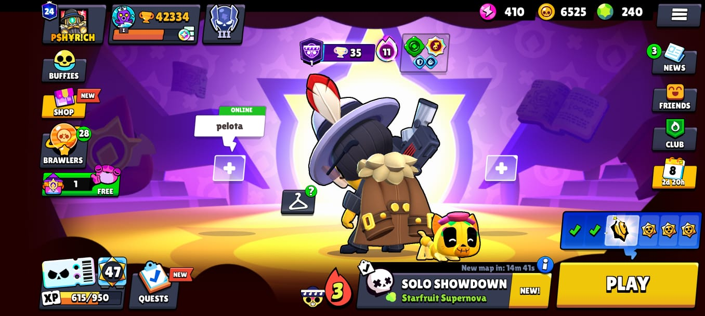
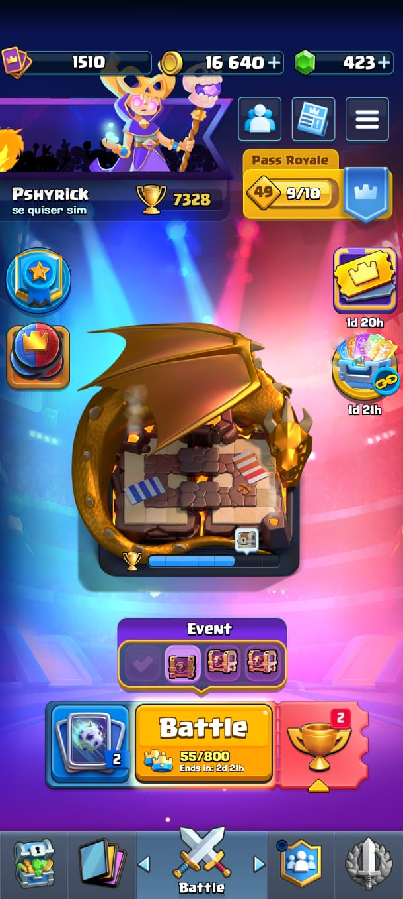

Jogar jogos competitivos
1. Brawl Stars: Um jogo de diversos modos lançado em 2018 em que costumo jogar com meus amigos, principalmente, sendo meu maior objetivo nele estar sempre competindo com meus amigos para ver quem tem mais troféus, quem está num ranking mais alto na ranqueada, está tendo um melhor desempenho nas partidas e principalmente nos divertir enquanto competimos, sendo esse meu carro-chefe.

2. Clash Royale: Um jogo que em sua maior parte do tempo é uma disputa para ver quem derruba a torre do adversário primeiro em que eu e meus amigos competimos para ver quem está com mais troféus e está tendo melhor desempenho geral, sendo esse o que eu sou o pior do grupo.
